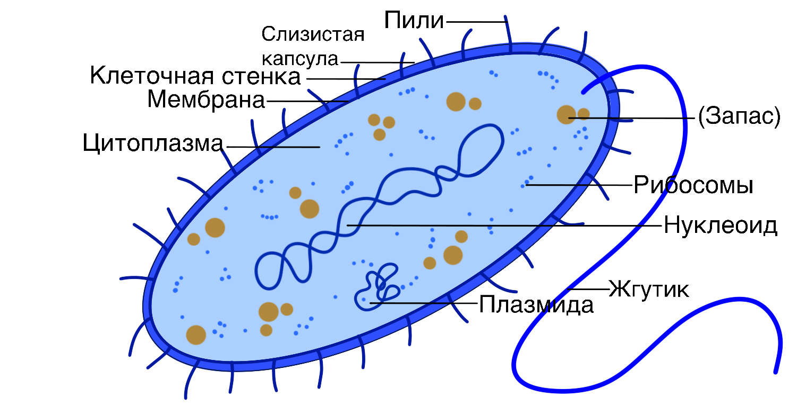

КЛЕТКА БАКТЕРИИ

Cостоит из:
- Клеточная стенка – из муреина
- слизистая капсула (не у всех)
- Плазматическая мембрана
- Цитоплазма
- Нуклеоид
- Плазмида*
- Мелкие рибосомы
- Резервный углевод – гликоген, крахмал
- Жгутики (не у всех)
- Пили (не у всех)
Признаки бактериальной клетки:
- Отсутствует ядро
- Отсутствуют мембранные органоиды
- Имеют только рибосомы
- Имеют мезосомы – складки плазматической мембраны
- Наследственной материал – кольцевая ДНК в нуклеоиде
- Клеточная стенка из муреина
- Имеют жгутики (не всегда)
*Плазмида — это небольшая внехромосомная молекула ДНК внутри клетки, которая физически отделена от хромосомной ДНК и может реплицироваться независимо.
На главную